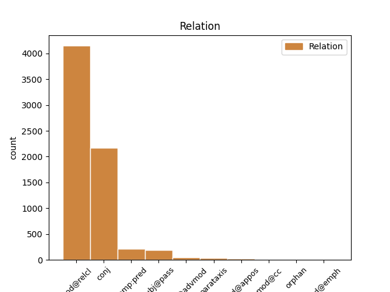
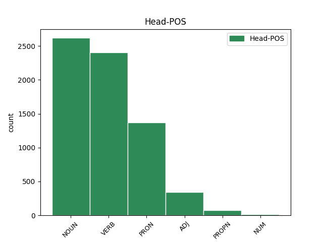
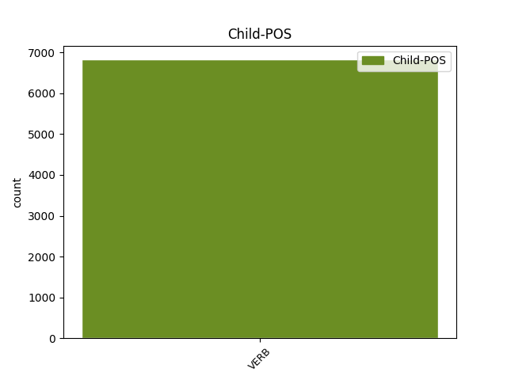

Distribution of features within this leaf



Agreement Rules sorted by frequency.
- When the dependent token is the modifer(mod@relcl) of the head token, and the head token is NOUN and the dependent token is VERB.
1 unde _ _ _ _ 0 _ _ _
2 videmus _ _ _ _ 0 _ _ _
3 quod _ _ _ _ 0 _ _ _
4 forma _ _ _ _ 0 _ _ _
5 mixti _ _ _ _ 0 _ _ _
6 corporis _ _ _ _ 0 _ _ _
7 habet _ _ _ _ 0 _ _ _
8 aliquam _ _ _ _ 0 _ _ _
9 operationem operatio NOUN C1|grn1|casD|gen2|vgr1 Case=Acc|Degree=Pos|Gender=Fem|Number=Sing 0 _ _ _
10 quae _ _ _ _ 0 _ _ _
11 non _ _ _ _ 0 _ _ _
12 causatur causo VERB J3|modJ|tem1|gen6 Mood=Ind|Number=Sing|Person=3|Tense=Pres|VerbForm=Fin|Voice=Pass 9 mod@relcl _ _
13 ex _ _ _ _ 0 _ _ _
14 qualitatibus _ _ _ _ 0 _ _ _
15 elementaribus _ _ _ _ 0 _ _ _
16 . _ _ _ _ 0 _ _ _
1 si _ _ _ _ 0 _ _ _
2 autem _ _ _ _ 0 _ _ _
3 secundum _ _ _ _ 0 _ _ _
4 aliquid _ _ _ _ 0 _ _ _
5 sui _ _ _ _ 0 _ _ _
6 sit _ _ _ _ 0 _ _ _
7 forma _ _ _ _ 0 _ _ _
8 , _ _ _ _ 0 _ _ _
9 id _ _ _ _ 0 _ _ _
10 quod _ _ _ _ 0 _ _ _
11 est _ _ _ _ 0 _ _ _
12 forma _ _ _ _ 0 _ _ _
13 dicimus dico VERB N3|modA|tem1|gen7 Mood=Ind|Number=Plur|Person=1|Tense=Pres|VerbForm=Fin|Voice=Act 0 _ _ _
14 animam _ _ _ _ 0 _ _ _
15 , _ _ _ _ 0 _ _ _
16 et _ _ _ _ 0 _ _ _
17 id _ _ _ _ 0 _ _ _
18 cuius _ _ _ _ 0 _ _ _
19 est _ _ _ _ 0 _ _ _
20 forma _ _ _ _ 0 _ _ _
21 dicimus dico VERB N3|modA|tem1|gen7 Mood=Ind|Number=Plur|Person=1|Tense=Pres|VerbForm=Fin|Voice=Act 13 conj _ _
22 primum _ _ _ _ 0 _ _ _
23 animatum _ _ _ _ 0 _ _ _
24 , _ _ _ _ 0 _ _ _
25 ut _ _ _ _ 0 _ _ _
26 supra _ _ _ _ 0 _ _ _
27 dictum _ _ _ _ 0 _ _ _
28 est _ _ _ _ 0 _ _ _
29 . _ _ _ _ 0 _ _ _
1 illud _ _ _ _ 0 _ _ _
2 enim _ _ _ _ 0 _ _ _
3 quo _ _ _ _ 0 _ _ _
4 primo _ _ _ _ 0 _ _ _
5 aliquid _ _ _ _ 0 _ _ _
6 operatur _ _ _ _ 0 _ _ _
7 , _ _ _ _ 0 _ _ _
8 est _ _ _ _ 0 _ _ _
9 forma _ _ _ _ 0 _ _ _
10 eius is PRON F1|grn1|casB|gen3|vgr2 Case=Gen|Degree=Pos|Gender=Neut|Number=Sing|PronType=Dem,Prs 0 _ _ _
11 cui _ _ _ _ 0 _ _ _
12 operatio _ _ _ _ 0 _ _ _
13 attribuitur attribuo VERB L3|modJ|tem1|gen6|vgr1 Mood=Ind|Number=Sing|Person=3|Tense=Pres|VerbForm=Fin|Voice=Pass 10 mod@relcl _ SpaceAfter=No
14 , _ _ _ _ 0 _ _ _
15 sicut _ _ _ _ 0 _ _ _
16 quo _ _ _ _ 0 _ _ _
17 primo _ _ _ _ 0 _ _ _
18 sanatur _ _ _ _ 0 _ _ _
19 corpus _ _ _ _ 0 _ _ _
20 , _ _ _ _ 0 _ _ _
21 est _ _ _ _ 0 _ _ _
22 sanitas _ _ _ _ 0 _ _ _
23 , _ _ _ _ 0 _ _ _
24 et _ _ _ _ 0 _ _ _
25 quo _ _ _ _ 0 _ _ _
26 primo _ _ _ _ 0 _ _ _
27 scit _ _ _ _ 0 _ _ _
28 anima _ _ _ _ 0 _ _ _
29 , _ _ _ _ 0 _ _ _
30 est _ _ _ _ 0 _ _ _
31 scientia _ _ _ _ 0 _ _ _
32 ; _ _ _ _ 0 _ _ _
1 secundum _ _ _ _ 0 _ _ _
2 vero _ _ _ _ 0 _ _ _
3 alios _ _ _ _ 0 _ _ _
4 , _ _ _ _ 0 _ _ _
5 qui _ _ _ _ 0 _ _ _
6 ponunt pono VERB L3|modA|tem1|gen9 Mood=Ind|Number=Plur|Person=3|Tense=Pres|VerbForm=Fin|Voice=Act 0 _ _ _
7 primo _ _ _ _ 0 _ _ _
8 creata creo VERB J2|modM|tem4|grp1|casM|gen3 Aspect=Perf|Case=Acc|Degree=Pos|Gender=Neut|Number=Plur|Tense=Past|VerbForm=Part|Voice=Pass 6 comp:pred _ _
9 elementa _ _ _ _ 0 _ _ _
10 sub _ _ _ _ 0 _ _ _
11 propriis _ _ _ _ 0 _ _ _
12 formis _ _ _ _ 0 _ _ _
13 , _ _ _ _ 0 _ _ _
14 oportet _ _ _ _ 0 _ _ _
15 aliter _ _ _ _ 0 _ _ _
16 dici _ _ _ _ 0 _ _ _
17 . _ _ _ _ 0 _ _ _
1 unde _ _ _ _ 0 _ _ _
2 quod _ _ _ _ 0 _ _ _
3 per _ _ _ _ 0 _ _ _
4 se _ _ _ _ 0 _ _ _
5 habet _ _ _ _ 0 _ _ _
6 esse _ _ _ _ 0 _ _ _
7 , _ _ _ _ 0 _ _ _
8 non _ _ _ _ 0 _ _ _
9 potest _ _ _ _ 0 _ _ _
10 generari _ _ _ _ 0 _ _ _
11 vel _ _ _ _ 0 _ _ _
12 corrumpi _ _ _ _ 0 _ _ _
13 nisi _ _ _ _ 0 _ _ _
14 per _ _ _ _ 0 _ _ _
15 se _ _ _ _ 0 _ _ _
16 , _ _ _ _ 0 _ _ _
17 quae _ _ _ _ 0 _ _ _
18 vero _ _ _ _ 0 _ _ _
19 non _ _ _ _ 0 _ _ _
20 subsistunt subsisto VERB L3|modA|tem1|gen9 Mood=Ind|Number=Plur|Person=3|Tense=Pres|VerbForm=Fin|Voice=Act 28 subj@pass _ SpaceAfter=No
21 , _ _ _ _ 0 _ _ _
22 ut _ _ _ _ 0 _ _ _
23 accidentia _ _ _ _ 0 _ _ _
24 et _ _ _ _ 0 _ _ _
25 formae _ _ _ _ 0 _ _ _
26 materiales _ _ _ _ 0 _ _ _
27 , _ _ _ _ 0 _ _ _
28 dicuntur dico VERB N3|modJ|tem1|gen9 Mood=Ind|Number=Plur|Person=3|Tense=Pres|VerbForm=Fin|Voice=Pass 0 _ _ _
29 fieri _ _ _ _ 0 _ _ _
30 et _ _ _ _ 0 _ _ _
31 corrumpi _ _ _ _ 0 _ _ _
32 per _ _ _ _ 0 _ _ _
33 generationem _ _ _ _ 0 _ _ _
34 et _ _ _ _ 0 _ _ _
35 corruptionem _ _ _ _ 0 _ _ _
36 compositorum _ _ _ _ 0 _ _ _
37 . _ _ _ _ 0 _ _ _
1 nec _ _ _ _ 0 _ _ _
2 hoc _ _ _ _ 0 _ _ _
3 excluditur _ _ _ _ 0 _ _ _
4 , _ _ _ _ 0 _ _ _
5 si _ _ _ _ 0 _ _ _
6 una _ _ _ _ 0 _ _ _
7 illarum _ _ _ _ 0 _ _ _
8 formarum _ _ _ _ 0 _ _ _
9 sit _ _ _ _ 0 _ _ _
10 perfectior perfectus ADJ C1|grn2|casA|gen2|vgr1 Case=Nom|Degree=Cmp|Gender=Fem|Number=Sing 0 _ _ _
11 et _ _ _ _ 0 _ _ _
12 continens contineo VERB K2|modD|tem1|grp1|casA|gen2 Case=Nom|Degree=Pos|Gender=Fem|Number=Sing|Tense=Pres|VerbForm=Part|Voice=Act 10 conj _ _
13 in _ _ _ _ 0 _ _ _
14 se _ _ _ _ 0 _ _ _
15 virtute _ _ _ _ 0 _ _ _
16 alias _ _ _ _ 0 _ _ _
17 . _ _ _ _ 0 _ _ _
1 sicut _ _ _ _ 0 _ _ _
2 in _ _ _ _ 0 _ _ _
3 illuminatione _ _ _ _ 0 _ _ _
4 , _ _ _ _ 0 _ _ _
5 et _ _ _ _ 0 _ _ _
6 in _ _ _ _ 0 _ _ _
7 generatione _ _ _ _ 0 _ _ _
8 substantiali _ _ _ _ 0 _ _ _
9 ignis _ _ _ _ 0 _ _ _
10 , _ _ _ _ 0 _ _ _
11 non _ _ _ _ 0 _ _ _
12 est _ _ _ _ 0 _ _ _
13 dare _ _ _ _ 0 _ _ _
14 ultimum _ _ _ _ 0 _ _ _
15 instans _ _ _ _ 0 _ _ _
16 in _ _ _ _ 0 _ _ _
17 quo _ _ _ _ 0 _ _ _
18 aer _ _ _ _ 0 _ _ _
19 fuit _ _ _ _ 0 _ _ _
20 tenebrosus tenebrosus ADJ B1|grn1|casA|gen1 Case=Nom|Degree=Pos|Gender=Masc|Number=Sing 0 _ _ _
21 , _ _ _ _ 0 _ _ _
22 vel _ _ _ _ 0 _ _ _
23 in _ _ _ _ 0 _ _ _
24 quo _ _ _ _ 0 _ _ _
25 materia _ _ _ _ 0 _ _ _
26 fuit sum VERB N3|modA|tem4|gen6 Aspect=Perf|Mood=Ind|Number=Sing|Person=3|Tense=Past|VerbForm=Fin|Voice=Act 20 mod@relcl _ _
27 sub _ _ _ _ 0 _ _ _
28 privatione _ _ _ _ 0 _ _ _
29 formae _ _ _ _ 0 _ _ _
30 ignis _ _ _ _ 0 _ _ _
31 , _ _ _ _ 0 _ _ _
32 sed _ _ _ _ 0 _ _ _
33 est _ _ _ _ 0 _ _ _
34 dare _ _ _ _ 0 _ _ _
35 ultimum _ _ _ _ 0 _ _ _
36 tempus _ _ _ _ 0 _ _ _
37 , _ _ _ _ 0 _ _ _
38 ita _ _ _ _ 0 _ _ _
39 quod _ _ _ _ 0 _ _ _
40 in _ _ _ _ 0 _ _ _
41 ultimo _ _ _ _ 0 _ _ _
42 illius _ _ _ _ 0 _ _ _
43 temporis _ _ _ _ 0 _ _ _
44 est _ _ _ _ 0 _ _ _
45 vel _ _ _ _ 0 _ _ _
46 lumen _ _ _ _ 0 _ _ _
47 in _ _ _ _ 0 _ _ _
48 aere _ _ _ _ 0 _ _ _
49 , _ _ _ _ 0 _ _ _
50 vel _ _ _ _ 0 _ _ _
51 forma _ _ _ _ 0 _ _ _
52 ignis _ _ _ _ 0 _ _ _
53 in _ _ _ _ 0 _ _ _
54 materia _ _ _ _ 0 _ _ _
55 . _ _ _ _ 0 _ _ _
1 quaecumque _ _ _ _ 0 _ _ _
2 autem _ _ _ _ 0 _ _ _
3 forma _ _ _ _ 0 _ _ _
4 creata _ _ _ _ 0 _ _ _
5 per _ _ _ _ 0 _ _ _
6 se _ _ _ _ 0 _ _ _
7 subsistens _ _ _ _ 0 _ _ _
8 ponatur _ _ _ _ 0 _ _ _
9 , _ _ _ _ 0 _ _ _
10 oportet _ _ _ _ 0 _ _ _
11 quod _ _ _ _ 0 _ _ _
12 participet _ _ _ _ 0 _ _ _
13 esse _ _ _ _ 0 _ _ _
14 , _ _ _ _ 0 _ _ _
15 quia _ _ _ _ 0 _ _ _
16 etiam _ _ _ _ 0 _ _ _
17 ipsa _ _ _ _ 0 _ _ _
18 vita vita NOUN A1|grn1|casA|gen2|vgr1 Case=Nom|Degree=Pos|Gender=Fem|Number=Sing 0 _ _ _
19 , _ _ _ _ 0 _ _ _
20 vel _ _ _ _ 0 _ _ _
21 quidquid _ _ _ _ 0 _ _ _
22 sic _ _ _ _ 0 _ _ _
23 diceretur dico VERB N3|modK|tem2|gen6 Aspect=Imp|Mood=Sub|Number=Sing|Person=3|Tense=Imp|VerbForm=Fin|Voice=Pass 18 conj _ SpaceAfter=No
24 , _ _ _ _ 0 _ _ _
25 participat _ _ _ _ 0 _ _ _
26 ipsum _ _ _ _ 0 _ _ _
27 esse _ _ _ _ 0 _ _ _
28 , _ _ _ _ 0 _ _ _
29 ut _ _ _ _ 0 _ _ _
30 dicit _ _ _ _ 0 _ _ _
31 dionysius _ _ _ _ 0 _ _ _
32 , _ _ _ _ 0 _ _ _
33 v _ _ _ _ 0 _ _ _
34 cap. _ _ _ _ 0 _ _ _
35 de _ _ _ _ 0 _ _ _
36 div. _ _ _ _ 0 _ _ _
37 nom. _ _ _ _ 0 _ _ _
38 . _ _ _ _ 0 _ _ _
1 praeterea _ _ _ _ 0 _ _ _
2 , _ _ _ _ 0 _ _ _
3 id _ _ _ _ 0 _ _ _
4 quod _ _ _ _ 0 _ _ _
5 per _ _ _ _ 0 _ _ _
6 se _ _ _ _ 0 _ _ _
7 habet _ _ _ _ 0 _ _ _
8 esse _ _ _ _ 0 _ _ _
9 , _ _ _ _ 0 _ _ _
10 non _ _ _ _ 0 _ _ _
11 unitur _ _ _ _ 0 _ _ _
12 corpori _ _ _ _ 0 _ _ _
13 ut _ _ _ _ 0 _ _ _
14 forma _ _ _ _ 0 _ _ _
15 , _ _ _ _ 0 _ _ _
16 quia _ _ _ _ 0 _ _ _
17 forma _ _ _ _ 0 _ _ _
18 est sum VERB N3|modA|tem1|gen6 Mood=Ind|Number=Sing|Person=3|Tense=Pres|VerbForm=Fin|Voice=Act 0 _ _ _
19 quo _ _ _ _ 0 _ _ _
20 aliquid _ _ _ _ 0 _ _ _
21 est sum VERB N3|modA|tem1|gen6 Mood=Ind|Number=Sing|Person=3|Tense=Pres|VerbForm=Fin|Voice=Act 18 mod@relcl _ SpaceAfter=No
22 ; _ _ _ _ 0 _ _ _
1 in _ _ _ _ 0 _ _ _
2 quo _ _ _ _ 0 _ _ _
3 significatur _ _ _ _ 0 _ _ _
4 formatio _ _ _ _ 0 _ _ _
5 rerum _ _ _ _ 0 _ _ _
6 per _ _ _ _ 0 _ _ _
7 verbum _ _ _ _ 0 _ _ _
8 dei deus PROPN F1|grn1|casB|gen1 Case=Gen|Degree=Pos|Gender=Masc|Number=Sing 0 _ _ _
9 facta _ _ _ _ 0 _ _ _
10 , _ _ _ _ 0 _ _ _
11 a _ _ _ _ 0 _ _ _
12 quo _ _ _ _ 0 _ _ _
13 , _ _ _ _ 0 _ _ _
14 secundum _ _ _ _ 0 _ _ _
15 augustinum _ _ _ _ 0 _ _ _
16 , _ _ _ _ 0 _ _ _
17 est sum VERB N3|modA|tem1|gen6 Mood=Ind|Number=Sing|Person=3|Tense=Pres|VerbForm=Fin|Voice=Act 8 mod@relcl _ _
18 omnis _ _ _ _ 0 _ _ _
19 forma _ _ _ _ 0 _ _ _
20 et _ _ _ _ 0 _ _ _
21 compago _ _ _ _ 0 _ _ _
22 et _ _ _ _ 0 _ _ _
23 concordia _ _ _ _ 0 _ _ _
24 partium _ _ _ _ 0 _ _ _
25 . _ _ _ _ 0 _ _ _
1 sequitur _ _ _ _ 0 _ _ _
2 ulterius _ _ _ _ 0 _ _ _
3 quod _ _ _ _ 0 _ _ _
4 etiam _ _ _ _ 0 _ _ _
5 formae _ _ _ _ 0 _ _ _
6 corporales _ _ _ _ 0 _ _ _
7 a _ _ _ _ 0 _ _ _
8 substantiis substantia NOUN A1|grn1|casO|gen2 Case=Abl|Degree=Pos|Gender=Fem|Number=Plur 0 _ _ _
9 spiritualibus _ _ _ _ 0 _ _ _
10 deriventur _ _ _ _ 0 _ _ _
11 , _ _ _ _ 0 _ _ _
12 non _ _ _ _ 0 _ _ _
13 tanquam _ _ _ _ 0 _ _ _
14 influentibus influo VERB L2|modD|tem1|grp1|casO|gen2 Case=Abl|Degree=Pos|Gender=Fem|Number=Plur|Tense=Pres|VerbForm=Part|Voice=Act 8 mod@advmod _ _
15 formas _ _ _ _ 0 _ _ _
16 , _ _ _ _ 0 _ _ _
17 sed _ _ _ _ 0 _ _ _
18 tanquam _ _ _ _ 0 _ _ _
19 moventibus _ _ _ _ 0 _ _ _
20 ad _ _ _ _ 0 _ _ _
21 formas _ _ _ _ 0 _ _ _
22 . _ _ _ _ 0 _ _ _
1 secundum _ _ _ _ 0 _ _ _
2 hoc _ _ _ _ 0 _ _ _
3 ergo _ _ _ _ 0 _ _ _
4 , _ _ _ _ 0 _ _ _
5 dicitur _ _ _ _ 0 _ _ _
6 terra _ _ _ _ 0 _ _ _
7 inanis _ _ _ _ 0 _ _ _
8 et _ _ _ _ 0 _ _ _
9 vacua _ _ _ _ 0 _ _ _
10 , _ _ _ _ 0 _ _ _
11 vel _ _ _ _ 0 _ _ _
12 invisibilis _ _ _ _ 0 _ _ _
13 et _ _ _ _ 0 _ _ _
14 incomposita _ _ _ _ 0 _ _ _
15 , _ _ _ _ 0 _ _ _
16 quia _ _ _ _ 0 _ _ _
17 materia _ _ _ _ 0 _ _ _
18 per _ _ _ _ 0 _ _ _
19 formam _ _ _ _ 0 _ _ _
20 cognoscitur _ _ _ _ 0 _ _ _
21 ( _ _ _ _ 0 _ _ _
22 unde _ _ _ _ 0 _ _ _
23 in _ _ _ _ 0 _ _ _
24 se _ _ _ _ 0 _ _ _
25 considerata _ _ _ _ 0 _ _ _
26 dicitur _ _ _ _ 0 _ _ _
27 invisibilis _ _ _ _ 0 _ _ _
28 vel _ _ _ _ 0 _ _ _
29 inanis _ _ _ _ 0 _ _ _
30 ) _ _ _ _ 0 _ _ _
31 , _ _ _ _ 0 _ _ _
32 et _ _ _ _ 0 _ _ _
33 eius _ _ _ _ 0 _ _ _
34 potentia _ _ _ _ 0 _ _ _
35 per _ _ _ _ 0 _ _ _
36 formam _ _ _ _ 0 _ _ _
37 repletur repleo VERB K3|modJ|tem1|gen6 Mood=Ind|Number=Sing|Person=3|Tense=Pres|VerbForm=Fin|Voice=Pass 0 _ _ _
38 ( _ _ _ _ 0 _ _ _
39 unde _ _ _ _ 0 _ _ _
40 et _ _ _ _ 0 _ _ _
41 plato _ _ _ _ 0 _ _ _
42 materiam _ _ _ _ 0 _ _ _
43 dicit dico VERB N3|modA|tem1|gen6 Mood=Ind|Number=Sing|Person=3|Tense=Pres|VerbForm=Fin|Voice=Act 37 parataxis _ _
44 esse _ _ _ _ 0 _ _ _
45 locum _ _ _ _ 0 _ _ _
46 ) _ _ _ _ 0 _ _ _
47 . _ _ _ _ 0 _ _ _
1 forma _ _ _ _ 0 _ _ _
2 enim _ _ _ _ 0 _ _ _
3 est _ _ _ _ 0 _ _ _
4 finis _ _ _ _ 0 _ _ _
5 generationis generatio NOUN C1|grn1|casB|gen2 Case=Gen|Degree=Pos|Gender=Fem|Number=Sing 0 _ _ _
6 , _ _ _ _ 0 _ _ _
7 non _ _ _ _ 0 _ _ _
8 ipsius _ _ _ _ 0 _ _ _
9 generati genero VERB J2|modM|tem4|grp1|casB|gen3 Aspect=Perf|Case=Gen|Degree=Pos|Gender=Neut|Number=Sing|Tense=Past|VerbForm=Part|Voice=Pass 5 mod@appos _ SpaceAfter=No
10 , _ _ _ _ 0 _ _ _
11 ut _ _ _ _ 0 _ _ _
12 dicit _ _ _ _ 0 _ _ _
13 commentator _ _ _ _ 0 _ _ _
14 in _ _ _ _ 0 _ _ _
15 2 _ _ _ _ 0 _ _ _
16 phys. _ _ _ _ 0 _ _ _
17 . _ _ _ _ 0 _ _ _
1 respondeo _ _ _ _ 0 _ _ _
2 dicendum _ _ _ _ 0 _ _ _
3 ad _ _ _ _ 0 _ _ _
4 primam _ _ _ _ 0 _ _ _
5 quaestionem _ _ _ _ 0 _ _ _
6 , _ _ _ _ 0 _ _ _
7 quod _ _ _ _ 0 _ _ _
8 proprie _ _ _ _ 0 _ _ _
9 loquendo _ _ _ _ 0 _ _ _
10 , _ _ _ _ 0 _ _ _
11 unum unus NUM F1|grn1|casA|gen3 Case=Nom|Degree=Pos|Gender=Neut|Number=Sing|NumType=Card 0 _ _ _
12 est _ _ _ _ 0 _ _ _
13 tantum _ _ _ _ 0 _ _ _
14 baptisma _ _ _ _ 0 _ _ _
15 , _ _ _ _ 0 _ _ _
16 quod _ _ _ _ 0 _ _ _
17 in _ _ _ _ 0 _ _ _
18 aqua _ _ _ _ 0 _ _ _
19 celebratur celebro VERB J3|modJ|tem1|gen6 Mood=Ind|Number=Sing|Person=3|Tense=Pres|VerbForm=Fin|Voice=Pass 11 mod@relcl _ _
20 sub _ _ _ _ 0 _ _ _
21 determinata _ _ _ _ 0 _ _ _
22 forma _ _ _ _ 0 _ _ _
23 verborum _ _ _ _ 0 _ _ _
24 , _ _ _ _ 0 _ _ _
25 de _ _ _ _ 0 _ _ _
26 qua _ _ _ _ 0 _ _ _
27 dominus _ _ _ _ 0 _ _ _
28 dicit _ _ _ _ 0 _ _ _
29 matth. _ _ _ _ 0 _ _ _
30 ult. _ _ _ _ 0 _ _ _
31 , _ _ _ _ 0 _ _ _
32 19 _ _ _ _ 0 _ _ _
33 : _ _ _ _ 0 _ _ _
34 docete _ _ _ _ 0 _ _ _
35 omnes _ _ _ _ 0 _ _ _
36 gentes _ _ _ _ 0 _ _ _
37 , _ _ _ _ 0 _ _ _
38 baptizantes _ _ _ _ 0 _ _ _
39 eos _ _ _ _ 0 _ _ _
40 in _ _ _ _ 0 _ _ _
41 nomine _ _ _ _ 0 _ _ _
42 patris _ _ _ _ 0 _ _ _
43 et _ _ _ _ 0 _ _ _
44 filii _ _ _ _ 0 _ _ _
45 et _ _ _ _ 0 _ _ _
46 spiritus _ _ _ _ 0 _ _ _
47 sancti _ _ _ _ 0 _ _ _
48 . _ _ _ _ 0 _ _ _
1 alia alius PRON F1|grn1|casA|gen2 Case=Nom|Degree=Pos|Gender=Fem|Number=Sing|PronType=Ind 0 _ _ _
2 est _ _ _ _ 0 _ _ _
3 divisio _ _ _ _ 0 _ _ _
4 formalis _ _ _ _ 0 _ _ _
5 , _ _ _ _ 0 _ _ _
6 quae _ _ _ _ 0 _ _ _
7 fit _ _ _ _ 0 _ _ _
8 per _ _ _ _ 0 _ _ _
9 oppositas _ _ _ _ 0 _ _ _
10 vel _ _ _ _ 0 _ _ _
11 diversas _ _ _ _ 0 _ _ _
12 formas _ _ _ _ 0 _ _ _
13 , _ _ _ _ 0 _ _ _
14 et _ _ _ _ 0 _ _ _
15 hanc _ _ _ _ 0 _ _ _
16 divisionem _ _ _ _ 0 _ _ _
17 sequitur sequor VERB L3|modJ|tem1|gen6|vgr1 Mood=Ind|Number=Sing|Person=3|Tense=Pres|VerbForm=Fin|Voice=Pass 1 conj _ _
18 multitudo _ _ _ _ 0 _ _ _
19 quae _ _ _ _ 0 _ _ _
20 non _ _ _ _ 0 _ _ _
21 est _ _ _ _ 0 _ _ _
22 in _ _ _ _ 0 _ _ _
23 aliquo _ _ _ _ 0 _ _ _
24 genere _ _ _ _ 0 _ _ _
25 , _ _ _ _ 0 _ _ _
26 sed _ _ _ _ 0 _ _ _
27 est _ _ _ _ 0 _ _ _
28 de _ _ _ _ 0 _ _ _
29 transcendentibus _ _ _ _ 0 _ _ _
30 , _ _ _ _ 0 _ _ _
31 secundum _ _ _ _ 0 _ _ _
32 quod _ _ _ _ 0 _ _ _
33 ens _ _ _ _ 0 _ _ _
34 dividitur _ _ _ _ 0 _ _ _
35 per _ _ _ _ 0 _ _ _
36 unum _ _ _ _ 0 _ _ _
37 et _ _ _ _ 0 _ _ _
38 multa _ _ _ _ 0 _ _ _
39 . _ _ _ _ 0 _ _ _
1 sed _ _ _ _ 0 _ _ _
2 agens _ _ _ _ 0 _ _ _
3 instrumentale _ _ _ _ 0 _ _ _
4 non _ _ _ _ 0 _ _ _
5 oportet _ _ _ _ 0 _ _ _
6 quod _ _ _ _ 0 _ _ _
7 habeat _ _ _ _ 0 _ _ _
8 formam _ _ _ _ 0 _ _ _
9 quam qui PRON F1|grn1|casD|gen2 Case=Acc|Degree=Pos|Gender=Fem|Number=Sing|PronType=Rel 0 _ _ _
10 inducit _ _ _ _ 0 _ _ _
11 ut _ _ _ _ 0 _ _ _
12 disponentem dispono VERB L2|modD|tem1|grp1|casD|gen2 Case=Acc|Degree=Pos|Gender=Fem|Number=Sing|Tense=Pres|VerbForm=Part|Voice=Act 9 mod@advmod _ _
13 ipsum _ _ _ _ 0 _ _ _
14 , _ _ _ _ 0 _ _ _
15 sed _ _ _ _ 0 _ _ _
16 solum _ _ _ _ 0 _ _ _
17 per _ _ _ _ 0 _ _ _
18 modum _ _ _ _ 0 _ _ _
19 intentionis _ _ _ _ 0 _ _ _
20 , _ _ _ _ 0 _ _ _
21 sicut _ _ _ _ 0 _ _ _
22 de _ _ _ _ 0 _ _ _
23 forma _ _ _ _ 0 _ _ _
24 scamni _ _ _ _ 0 _ _ _
25 in _ _ _ _ 0 _ _ _
26 serra _ _ _ _ 0 _ _ _
27 patet _ _ _ _ 0 _ _ _
28 , _ _ _ _ 0 _ _ _
29 ut _ _ _ _ 0 _ _ _
30 in _ _ _ _ 0 _ _ _
31 1 _ _ _ _ 0 _ _ _
32 dist. _ _ _ _ 0 _ _ _
33 , _ _ _ _ 0 _ _ _
34 quaest. _ _ _ _ 0 _ _ _
35 1 _ _ _ _ 0 _ _ _
36 , _ _ _ _ 0 _ _ _
37 art. _ _ _ _ 0 _ _ _
38 4 _ _ _ _ 0 _ _ _
39 , _ _ _ _ 0 _ _ _
40 quaestiunc. _ _ _ _ 0 _ _ _
41 1 _ _ _ _ 0 _ _ _
42 et _ _ _ _ 0 _ _ _
43 2 _ _ _ _ 0 _ _ _
44 , _ _ _ _ 0 _ _ _
45 dictum _ _ _ _ 0 _ _ _
46 est _ _ _ _ 0 _ _ _
47 . _ _ _ _ 0 _ _ _
1 impossibile _ _ _ _ 0 _ _ _
2 est _ _ _ _ 0 _ _ _
3 ergo _ _ _ _ 0 _ _ _
4 quod _ _ _ _ 0 _ _ _
5 visio _ _ _ _ 0 _ _ _
6 alicuius _ _ _ _ 0 _ _ _
7 intellectus _ _ _ _ 0 _ _ _
8 creati _ _ _ _ 0 _ _ _
9 adaequet _ _ _ _ 0 _ _ _
10 in _ _ _ _ 0 _ _ _
11 videndo video VERB K2|modE|grp1|casF|vgr1 Case=Abl|Degree=Pos|Number=Sing|VerbForm=Ger|Voice=Act 0 _ _ _
12 divinam _ _ _ _ 0 _ _ _
13 substantiam _ _ _ _ 0 _ _ _
14 , _ _ _ _ 0 _ _ _
15 scilicet _ _ _ _ 0 _ _ _
16 ita _ _ _ _ 0 _ _ _
17 perfecte _ _ _ _ 0 _ _ _
18 ipsam _ _ _ _ 0 _ _ _
19 videndo video VERB K2|modE|grp1|casF|vgr1 Case=Abl|Degree=Pos|Number=Sing|VerbForm=Ger|Voice=Act 11 mod@appos _ _
20 sicut _ _ _ _ 0 _ _ _
21 visibilis _ _ _ _ 0 _ _ _
22 est _ _ _ _ 0 _ _ _
23 . _ _ _ _ 0 _ _ _
1 nam _ _ _ _ 0 _ _ _
2 forma forma NOUN A1|grn1|casA|gen2 Case=Nom|Degree=Pos|Gender=Fem|Number=Sing 0 _ _ _
3 est _ _ _ _ 0 _ _ _
4 operationis _ _ _ _ 0 _ _ _
5 principium _ _ _ _ 0 _ _ _
6 , _ _ _ _ 0 _ _ _
7 secundum _ _ _ _ 0 _ _ _
8 quam _ _ _ _ 0 _ _ _
9 unaquaeque _ _ _ _ 0 _ _ _
10 natura _ _ _ _ 0 _ _ _
11 habet habeo VERB K3|modA|tem1|gen6 Mood=Ind|Number=Sing|Person=3|Tense=Pres|VerbForm=Fin|Voice=Act 2 parataxis _ _
12 propriam _ _ _ _ 0 _ _ _
13 speciem _ _ _ _ 0 _ _ _
14 . _ _ _ _ 0 _ _ _
1 sed _ _ _ _ 0 _ _ _
2 quod _ _ _ _ 0 _ _ _
3 est _ _ _ _ 0 _ _ _
4 secundum _ _ _ _ 0 _ _ _
5 aliquid _ _ _ _ 0 _ _ _
6 sui _ _ _ _ 0 _ _ _
7 in _ _ _ _ 0 _ _ _
8 actu _ _ _ _ 0 _ _ _
9 , _ _ _ _ 0 _ _ _
10 et _ _ _ _ 0 _ _ _
11 secundum _ _ _ _ 0 _ _ _
12 aliquid _ _ _ _ 0 _ _ _
13 in _ _ _ _ 0 _ _ _
14 potentia _ _ _ _ 0 _ _ _
15 , _ _ _ _ 0 _ _ _
16 efficit _ _ _ _ 0 _ _ _
17 rem _ _ _ _ 0 _ _ _
18 secundum _ _ _ _ 0 _ _ _
19 aliquid aliquis PRON F1|grn1|casD|gen3 Case=Acc|Degree=Pos|Gender=Neut|Number=Sing|PronType=Ind 0 _ _ _
20 sui _ _ _ _ 0 _ _ _
21 , _ _ _ _ 0 _ _ _
22 scilicet _ _ _ _ 0 _ _ _
23 inducendo induco VERB N2|modE|grp1|casF Case=Abl|Degree=Pos|Number=Sing|VerbForm=Ger|Voice=Act 19 mod@appos _ _
24 formam _ _ _ _ 0 _ _ _
25 in _ _ _ _ 0 _ _ _
26 materiam _ _ _ _ 0 _ _ _
27 . _ _ _ _ 0 _ _ _
1 sed _ _ _ _ 0 _ _ _
2 quia _ _ _ _ 0 _ _ _
3 ex _ _ _ _ 0 _ _ _
4 uno _ _ _ _ 0 _ _ _
5 errore _ _ _ _ 0 _ _ _
6 circa _ _ _ _ 0 _ _ _
7 principium _ _ _ _ 0 _ _ _
8 varius _ _ _ _ 0 _ _ _
9 et _ _ _ _ 0 _ _ _
10 multiplex _ _ _ _ 0 _ _ _
11 error _ _ _ _ 0 _ _ _
12 consequitur _ _ _ _ 0 _ _ _
13 , _ _ _ _ 0 _ _ _
14 ex _ _ _ _ 0 _ _ _
15 prima _ _ _ _ 0 _ _ _
16 inordinatione _ _ _ _ 0 _ _ _
17 voluntatis _ _ _ _ 0 _ _ _
18 quae _ _ _ _ 0 _ _ _
19 fuit _ _ _ _ 0 _ _ _
20 in _ _ _ _ 0 _ _ _
21 daemone _ _ _ _ 0 _ _ _
22 , _ _ _ _ 0 _ _ _
23 consecutum _ _ _ _ 0 _ _ _
24 est _ _ _ _ 0 _ _ _
25 multiplex _ _ _ _ 0 _ _ _
26 peccatum _ _ _ _ 0 _ _ _
27 in _ _ _ _ 0 _ _ _
28 voluntate _ _ _ _ 0 _ _ _
29 ipsius _ _ _ _ 0 _ _ _
30 : _ _ _ _ 0 _ _ _
31 et _ _ _ _ 0 _ _ _
32 odii _ _ _ _ 0 _ _ _
33 ad _ _ _ _ 0 _ _ _
34 deum deus PROPN F1|grn1|casD|gen1 Case=Acc|Degree=Pos|Gender=Masc|Number=Sing 0 _ _ _
35 , _ _ _ _ 0 _ _ _
36 ut _ _ _ _ 0 _ _ _
37 resistentem resisto VERB L2|modD|tem1|grp1|casD|gen1 Case=Acc|Degree=Pos|Gender=Masc|Number=Sing|Tense=Pres|VerbForm=Part|Voice=Act 34 mod@advmod _ _
38 suae _ _ _ _ 0 _ _ _
39 superbiae _ _ _ _ 0 _ _ _
40 , _ _ _ _ 0 _ _ _
41 et _ _ _ _ 0 _ _ _
42 punientem _ _ _ _ 0 _ _ _
43 iustissime _ _ _ _ 0 _ _ _
44 suam _ _ _ _ 0 _ _ _
45 culpam _ _ _ _ 0 _ _ _
46 ; _ _ _ _ 0 _ _ _
47 et _ _ _ _ 0 _ _ _
48 invidiae _ _ _ _ 0 _ _ _
49 ad _ _ _ _ 0 _ _ _
50 hominem _ _ _ _ 0 _ _ _
51 ; _ _ _ _ 0 _ _ _
1 agens _ _ _ _ 0 _ _ _
2 est _ _ _ _ 0 _ _ _
3 nobilius _ _ _ _ 0 _ _ _
4 patiente _ _ _ _ 0 _ _ _
5 et _ _ _ _ 0 _ _ _
6 faciens facio VERB N2|modD|tem1|grp1|casA|gen3 Case=Nom|Degree=Pos|Gender=Neut|Number=Sing|Tense=Pres|VerbForm=Part|Voice=Act 0 _ _ _
7 facto facio VERB N2|modM|tem4|grp1|casF|gen3 Aspect=Perf|Case=Abl|Degree=Pos|Gender=Neut|Number=Sing|Tense=Past|VerbForm=Part|Voice=Pass 6 orphan _ SpaceAfter=No
8 , _ _ _ _ 0 _ _ _
9 sicut _ _ _ _ 0 _ _ _
10 actus _ _ _ _ 0 _ _ _
11 potentia _ _ _ _ 0 _ _ _
12 . _ _ _ _ 0 _ _ _
1 similitudo _ _ _ _ 0 _ _ _
2 vero _ _ _ _ 0 _ _ _
3 intellectus _ _ _ _ 0 _ _ _
4 substantiae _ _ _ _ 0 _ _ _
5 separatae _ _ _ _ 0 _ _ _
6 , _ _ _ _ 0 _ _ _
7 cum _ _ _ _ 0 _ _ _
8 sit _ _ _ _ 0 _ _ _
9 universalis _ _ _ _ 0 _ _ _
10 virtutis virtus NOUN C1|grn1|casB|gen2|vgr1 Case=Gen|Degree=Pos|Gender=Fem|Number=Sing 0 _ _ _
11 , _ _ _ _ 0 _ _ _
12 quasi _ _ _ _ 0 _ _ _
13 quaedam _ _ _ _ 0 _ _ _
14 una _ _ _ _ 0 _ _ _
15 et _ _ _ _ 0 _ _ _
16 immaterialis _ _ _ _ 0 _ _ _
17 existens exsisto VERB L2|modD|tem1|grp1|casA|gen2|vgr1 Case=Nom|Degree=Pos|Gender=Fem|Number=Sing|Tense=Pres|VerbForm=Part|Voice=Act 10 comp:pred _ SpaceAfter=No
18 , _ _ _ _ 0 _ _ _
19 potest _ _ _ _ 0 _ _ _
20 ducere _ _ _ _ 0 _ _ _
21 in _ _ _ _ 0 _ _ _
22 cognitionem _ _ _ _ 0 _ _ _
23 principiorum _ _ _ _ 0 _ _ _
24 speciei _ _ _ _ 0 _ _ _
25 et _ _ _ _ 0 _ _ _
26 individuantium _ _ _ _ 0 _ _ _
27 , _ _ _ _ 0 _ _ _
28 ita _ _ _ _ 0 _ _ _
29 quod _ _ _ _ 0 _ _ _
30 per _ _ _ _ 0 _ _ _
31 eam _ _ _ _ 0 _ _ _
32 substantia _ _ _ _ 0 _ _ _
33 separata _ _ _ _ 0 _ _ _
34 non _ _ _ _ 0 _ _ _
35 solum _ _ _ _ 0 _ _ _
36 naturam _ _ _ _ 0 _ _ _
37 generis _ _ _ _ 0 _ _ _
38 et _ _ _ _ 0 _ _ _
39 speciei _ _ _ _ 0 _ _ _
40 , _ _ _ _ 0 _ _ _
41 sed _ _ _ _ 0 _ _ _
42 etiam _ _ _ _ 0 _ _ _
43 individui _ _ _ _ 0 _ _ _
44 , _ _ _ _ 0 _ _ _
45 cognoscere _ _ _ _ 0 _ _ _
46 possit _ _ _ _ 0 _ _ _
47 per _ _ _ _ 0 _ _ _
48 suum _ _ _ _ 0 _ _ _
49 intellectum _ _ _ _ 0 _ _ _
50 . _ _ _ _ 0 _ _ _
1 unde _ _ _ _ 0 _ _ _
2 finis _ _ _ _ 0 _ _ _
3 motus _ _ _ _ 0 _ _ _
4 eorum _ _ _ _ 0 _ _ _
5 est _ _ _ _ 0 _ _ _
6 ut _ _ _ _ 0 _ _ _
7 consequantur _ _ _ _ 0 _ _ _
8 divinam _ _ _ _ 0 _ _ _
9 similitudinem _ _ _ _ 0 _ _ _
10 quantum _ _ _ _ 0 _ _ _
11 ad _ _ _ _ 0 _ _ _
12 hoc _ _ _ _ 0 _ _ _
13 quod _ _ _ _ 0 _ _ _
14 sint _ _ _ _ 0 _ _ _
15 in _ _ _ _ 0 _ _ _
16 seipsis _ _ _ _ 0 _ _ _
17 perfecta perfectus ADJ B1|grn1|casJ|gen3 Case=Nom|Degree=Pos|Gender=Neut|Number=Plur 0 _ _ _
18 , _ _ _ _ 0 _ _ _
19 utpote _ _ _ _ 0 _ _ _
20 habentia habeo VERB K2|modD|tem1|grp1|casJ|gen3 Case=Nom|Degree=Pos|Gender=Neut|Number=Plur|Tense=Pres|VerbForm=Part|Voice=Act 17 comp:pred _ _
21 propriam _ _ _ _ 0 _ _ _
22 formam _ _ _ _ 0 _ _ _
23 et _ _ _ _ 0 _ _ _
24 proprium _ _ _ _ 0 _ _ _
25 ubi _ _ _ _ 0 _ _ _
26 . _ _ _ _ 0 _ _ _
1 dicitur _ _ _ _ 0 _ _ _
2 enim _ _ _ _ 0 _ _ _
3 ab _ _ _ _ 0 _ _ _
4 eidos _ _ _ _ 0 _ _ _
5 , _ _ _ _ 0 _ _ _
6 quod _ _ _ _ 0 _ _ _
7 est sum VERB N3|modA|tem1|gen6 Mood=Ind|Number=Sing|Person=3|Tense=Pres|VerbForm=Fin|Voice=Act 8 mod@cc _ _
8 forma forma NOUN A1|grn1|casA|gen2 Case=Nom|Degree=Pos|Gender=Fem|Number=Sing 0 _ _ _
9 . _ _ _ _ 0 _ _ _
1 et _ _ _ _ 0 _ _ _
2 quia _ _ _ _ 0 _ _ _
3 medium _ _ _ _ 0 _ _ _
4 complectitur _ _ _ _ 0 _ _ _
5 aliquo _ _ _ _ 0 _ _ _
6 modo _ _ _ _ 0 _ _ _
7 utrumque _ _ _ _ 0 _ _ _
8 extremorum _ _ _ _ 0 _ _ _
9 , _ _ _ _ 0 _ _ _
10 ideo _ _ _ _ 0 _ _ _
11 forma _ _ _ _ 0 _ _ _
12 baptismi _ _ _ _ 0 _ _ _
13 continet _ _ _ _ 0 _ _ _
14 et _ _ _ _ 0 _ _ _
15 principale _ _ _ _ 0 _ _ _
16 efficiens efficiens ADJ C1|grn1|casD|gen3 Case=Acc|Degree=Pos|Gender=Neut|Number=Sing 0 _ _ _
17 , _ _ _ _ 0 _ _ _
18 unde _ _ _ _ 0 _ _ _
19 baptismus _ _ _ _ 0 _ _ _
20 efficaciam _ _ _ _ 0 _ _ _
21 habet habeo VERB K3|modA|tem1|gen6 Mood=Ind|Number=Sing|Person=3|Tense=Pres|VerbForm=Fin|Voice=Act 16 parataxis _ SpaceAfter=No
22 , _ _ _ _ 0 _ _ _
23 et _ _ _ _ 0 _ _ _
24 materiam _ _ _ _ 0 _ _ _
25 baptismi _ _ _ _ 0 _ _ _
26 proximam _ _ _ _ 0 _ _ _
27 quae _ _ _ _ 0 _ _ _
28 est _ _ _ _ 0 _ _ _
29 actus _ _ _ _ 0 _ _ _
30 ablutionis _ _ _ _ 0 _ _ _
31 ; _ _ _ _ 0 _ _ _
1 et _ _ _ _ 0 _ _ _
2 ideo _ _ _ _ 0 _ _ _
3 alii _ _ _ _ 0 _ _ _
4 dicunt _ _ _ _ 0 _ _ _
5 , _ _ _ _ 0 _ _ _
6 quod _ _ _ _ 0 _ _ _
7 dicta _ _ _ _ 0 _ _ _
8 completio _ _ _ _ 0 _ _ _
9 , _ _ _ _ 0 _ _ _
10 ex _ _ _ _ 0 _ _ _
11 quo _ _ _ _ 0 _ _ _
12 corpora _ _ _ _ 0 _ _ _
13 humana _ _ _ _ 0 _ _ _
14 subtilia _ _ _ _ 0 _ _ _
15 dicentur _ _ _ _ 0 _ _ _
16 , _ _ _ _ 0 _ _ _
17 erit _ _ _ _ 0 _ _ _
18 ex _ _ _ _ 0 _ _ _
19 dominio _ _ _ _ 0 _ _ _
20 animae _ _ _ _ 0 _ _ _
21 glorificatae _ _ _ _ 0 _ _ _
22 , _ _ _ _ 0 _ _ _
23 quae _ _ _ _ 0 _ _ _
24 est _ _ _ _ 0 _ _ _
25 forma _ _ _ _ 0 _ _ _
26 corporis _ _ _ _ 0 _ _ _
27 , _ _ _ _ 0 _ _ _
28 super _ _ _ _ 0 _ _ _
29 ipsum _ _ _ _ 0 _ _ _
30 , _ _ _ _ 0 _ _ _
31 ratione _ _ _ _ 0 _ _ _
32 cujus _ _ _ _ 0 _ _ _
33 corpus _ _ _ _ 0 _ _ _
34 gloriosum _ _ _ _ 0 _ _ _
35 spirituale spiritualis ADJ C1|grn1|casA|gen3|vgr1 Case=Nom|Degree=Pos|Gender=Neut|Number=Sing 0 _ _ _
36 dicitur _ _ _ _ 0 _ _ _
37 , _ _ _ _ 0 _ _ _
38 quasi _ _ _ _ 0 _ _ _
39 omnino _ _ _ _ 0 _ _ _
40 spiritui _ _ _ _ 0 _ _ _
41 subjectum subicio VERB L2|modM|tem4|grp1|casA|gen3|vgr1 Aspect=Perf|Case=Nom|Degree=Pos|Gender=Neut|Number=Sing|Tense=Past|VerbForm=Part|Voice=Pass 35 mod@appos _ SpaceAfter=No
42 . _ _ _ _ 0 _ _ _
1 sed _ _ _ _ 0 _ _ _
2 contra _ _ _ _ 0 _ _ _
3 est _ _ _ _ 0 _ _ _
4 quod _ _ _ _ 0 _ _ _
5 dicit _ _ _ _ 0 _ _ _
6 augustinus _ _ _ _ 0 _ _ _
7 , _ _ _ _ 0 _ _ _
8 in _ _ _ _ 0 _ _ _
9 libro _ _ _ _ 0 _ _ _
10 octoginta _ _ _ _ 0 _ _ _
11 trium _ _ _ _ 0 _ _ _
12 quaest. _ _ _ _ 0 _ _ _
13 , _ _ _ _ 0 _ _ _
14 ideae _ _ _ _ 0 _ _ _
15 sunt _ _ _ _ 0 _ _ _
16 principales _ _ _ _ 0 _ _ _
17 quaedam _ _ _ _ 0 _ _ _
18 formae _ _ _ _ 0 _ _ _
19 vel _ _ _ _ 0 _ _ _
20 rationes _ _ _ _ 0 _ _ _
21 rerum _ _ _ _ 0 _ _ _
22 stabiles _ _ _ _ 0 _ _ _
23 atque _ _ _ _ 0 _ _ _
24 incommutabiles _ _ _ _ 0 _ _ _
25 , _ _ _ _ 0 _ _ _
26 quia _ _ _ _ 0 _ _ _
27 ipsae _ _ _ _ 0 _ _ _
28 formatae formo VERB J2|modM|tem4|grp1|casJ|gen2 Aspect=Perf|Case=Nom|Degree=Pos|Gender=Fem|Number=Plur|Tense=Past|VerbForm=Part|Voice=Pass 0 _ _ _
29 non _ _ _ _ 0 _ _ _
30 sunt sum VERB N3|modA|tem1|gen9 Mood=Ind|Number=Plur|Person=3|Tense=Pres|VerbForm=Fin|Voice=Act 28 mod@emph _ SpaceAfter=No
31 , _ _ _ _ 0 _ _ _
32 ac _ _ _ _ 0 _ _ _
33 per _ _ _ _ 0 _ _ _
34 hoc _ _ _ _ 0 _ _ _
35 aeternae _ _ _ _ 0 _ _ _
36 ac _ _ _ _ 0 _ _ _
37 semper _ _ _ _ 0 _ _ _
38 eodem _ _ _ _ 0 _ _ _
39 modo _ _ _ _ 0 _ _ _
40 se _ _ _ _ 0 _ _ _
41 habentes _ _ _ _ 0 _ _ _
42 , _ _ _ _ 0 _ _ _
43 quae _ _ _ _ 0 _ _ _
44 divina _ _ _ _ 0 _ _ _
45 intelligentia _ _ _ _ 0 _ _ _
46 continentur _ _ _ _ 0 _ _ _
47 . _ _ _ _ 0 _ _ _
Disagree Examples:
1 oportet _ _ _ _ 0 _ _ _
2 igitur _ _ _ _ 0 _ _ _
3 eum _ _ _ _ 0 _ _ _
4 esse _ _ _ _ 0 _ _ _
5 beatum _ _ _ _ 0 _ _ _
6 qui _ _ _ _ 0 _ _ _
7 perfectus _ _ _ _ 0 _ _ _
8 est _ _ _ _ 0 _ _ _
9 quantum _ _ _ _ 0 _ _ _
10 ad _ _ _ _ 0 _ _ _
11 omnia omnis PRON C1|grn1|casM|gen3 Case=Acc|Degree=Pos|Gender=Neut|Number=Plur|PronType=Ind 0 _ _ _
12 quae _ _ _ _ 0 _ _ _
13 desiderare _ _ _ _ 0 _ _ _
14 potest possum VERB N3|modA|tem1|gen6 Mood=Ind|Number=Sing|Person=3|Tense=Pres|VerbForm=Fin|VerbType=Mod|Voice=Act 11 mod@relcl _ SpaceAfter=No
15 : _ _ _ _ 0 _ _ _
1 illa ille PRON F1|grn1|casM|gen3 Case=Acc|Degree=Pos|Gender=Neut|Number=Plur|PronType=Dem 0 _ _ _
2 etiam _ _ _ _ 0 _ _ _
3 quae _ _ _ _ 0 _ _ _
4 intellectus _ _ _ _ 0 _ _ _
5 alius _ _ _ _ 0 _ _ _
6 cognoscit cognosco VERB L3|modA|tem1|gen6 Mood=Ind|Number=Sing|Person=3|Tense=Pres|VerbForm=Fin|Voice=Act 1 mod@relcl _ SpaceAfter=No
7 , _ _ _ _ 0 _ _ _
8 non _ _ _ _ 0 _ _ _
9 omnia _ _ _ _ 0 _ _ _
10 una _ _ _ _ 0 _ _ _
11 et _ _ _ _ 0 _ _ _
12 eadem _ _ _ _ 0 _ _ _
13 operatione _ _ _ _ 0 _ _ _
14 cognoscit _ _ _ _ 0 _ _ _
15 . _ _ _ _ 0 _ _ _
1 fatigatio _ _ _ _ 0 _ _ _
2 , _ _ _ _ 0 _ _ _
3 et _ _ _ _ 0 _ _ _
4 occupationes _ _ _ _ 0 _ _ _
5 variae _ _ _ _ 0 _ _ _
6 quibus _ _ _ _ 0 _ _ _
7 necesse _ _ _ _ 0 _ _ _
8 est _ _ _ _ 0 _ _ _
9 contemplationem _ _ _ _ 0 _ _ _
10 nostram _ _ _ _ 0 _ _ _
11 in _ _ _ _ 0 _ _ _
12 hac _ _ _ _ 0 _ _ _
13 vita _ _ _ _ 0 _ _ _
14 interpolari _ _ _ _ 0 _ _ _
15 , _ _ _ _ 0 _ _ _
16 in _ _ _ _ 0 _ _ _
17 qua _ _ _ _ 0 _ _ _
18 consistit _ _ _ _ 0 _ _ _
19 praecipue _ _ _ _ 0 _ _ _
20 humana _ _ _ _ 0 _ _ _
21 felicitas _ _ _ _ 0 _ _ _
22 , _ _ _ _ 0 _ _ _
23 si _ _ _ _ 0 _ _ _
24 qua _ _ _ _ 0 _ _ _
25 est _ _ _ _ 0 _ _ _
26 praesentis _ _ _ _ 0 _ _ _
27 vitae _ _ _ _ 0 _ _ _
28 ; _ _ _ _ 0 _ _ _
29 errores _ _ _ _ 0 _ _ _
30 , _ _ _ _ 0 _ _ _
31 dubitationes _ _ _ _ 0 _ _ _
32 , _ _ _ _ 0 _ _ _
33 et _ _ _ _ 0 _ _ _
34 casus casus NOUN D1|grn1|casJ|gen1 Case=Nom|Degree=Pos|Gender=Masc|Number=Plur 0 _ _ _
35 varii _ _ _ _ 0 _ _ _
36 quibus _ _ _ _ 0 _ _ _
37 subiacet subjaceo VERB K3|modA|tem1|gen6|vgr2 Mood=Ind|Number=Sing|Person=3|Tense=Pres|VerbForm=Fin|Voice=Act 34 mod@relcl _ _
38 praesens _ _ _ _ 0 _ _ _
39 vita _ _ _ _ 0 _ _ _
40 ; _ _ _ _ 0 _ _ _
41 ostendunt _ _ _ _ 0 _ _ _
42 omnino _ _ _ _ 0 _ _ _
43 incomparabilem _ _ _ _ 0 _ _ _
44 esse _ _ _ _ 0 _ _ _
45 humanam _ _ _ _ 0 _ _ _
46 felicitatem _ _ _ _ 0 _ _ _
47 , _ _ _ _ 0 _ _ _
48 praecipue _ _ _ _ 0 _ _ _
49 huius _ _ _ _ 0 _ _ _
50 vitae _ _ _ _ 0 _ _ _
51 , _ _ _ _ 0 _ _ _
52 divinae _ _ _ _ 0 _ _ _
53 beatitudini _ _ _ _ 0 _ _ _
54 . _ _ _ _ 0 _ _ _
1 mirabilia mirabilis NOUN C1|grn1|casJ|gen3 Case=Nom|Degree=Pos|Gender=Neut|Number=Plur 0 _ _ _
2 opera _ _ _ _ 0 _ _ _
3 tua _ _ _ _ 0 _ _ _
4 , _ _ _ _ 0 _ _ _
5 et _ _ _ _ 0 _ _ _
6 anima _ _ _ _ 0 _ _ _
7 mea _ _ _ _ 0 _ _ _
8 cognoscet cognosco VERB L3|modA|tem3|gen6 Mood=Ind|Number=Sing|Person=3|Tense=Fut|VerbForm=Fin|Voice=Act 1 conj _ _
9 nimis _ _ _ _ 0 _ _ _
10 . _ _ _ _ 0 _ _ _
1 inebriabuntur inebrio VERB J3|modJ|tem3|gen9 Mood=Ind|Number=Plur|Person=3|Tense=Fut|VerbForm=Fin|Voice=Pass 0 _ _ _
2 ab _ _ _ _ 0 _ _ _
3 ubertate _ _ _ _ 0 _ _ _
4 domus _ _ _ _ 0 _ _ _
5 tuae _ _ _ _ 0 _ _ _
6 , _ _ _ _ 0 _ _ _
7 quasi _ _ _ _ 0 _ _ _
8 totius _ _ _ _ 0 _ _ _
9 creaturae _ _ _ _ 0 _ _ _
10 , _ _ _ _ 0 _ _ _
11 et _ _ _ _ 0 _ _ _
12 sicut _ _ _ _ 0 _ _ _
13 torrente _ _ _ _ 0 _ _ _
14 voluptatis _ _ _ _ 0 _ _ _
15 tuae _ _ _ _ 0 _ _ _
16 potabis poto VERB J3|modA|tem3|gen5 Mood=Ind|Number=Sing|Person=2|Tense=Fut|VerbForm=Fin|Voice=Act 1 conj _ _
17 eos _ _ _ _ 0 _ _ _
18 : _ _ _ _ 0 _ _ _
19 quoniam _ _ _ _ 0 _ _ _
20 apud _ _ _ _ 0 _ _ _
21 te _ _ _ _ 0 _ _ _
22 est _ _ _ _ 0 _ _ _
23 fons _ _ _ _ 0 _ _ _
24 vitae _ _ _ _ 0 _ _ _
25 . _ _ _ _ 0 _ _ _